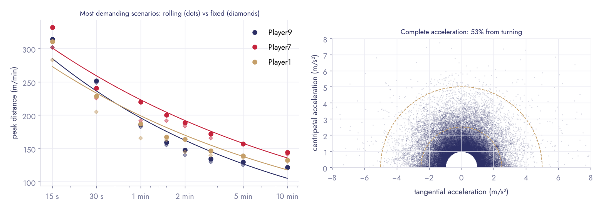

Python library · tracking data · football
Peak demands, sourced line by line
From GPS, LPS or optical tracking to the efforts of a session, its most demanding scenarios and the exposure metrics proposed by "GPS 3.0": every definition taken from a paper read in full, every parameter exposed, and a designed PDF report.
Get started
From positions to a report
pip install "peakdemands[report] @ git+https://github.com/Clement0242/peakdemands"
import peakdemands as pk
d = pk.load_metrica("Player9") # an open professional match, 25 Hz
kin = pk.from_positions(d["time"], d["x"], d["y"]) # or pk.from_speed(time, speed)
from peakdemands.report import session_report
session_report(kin, "match.pdf", mss=9.2, mas=17.0)A full match report for physical preparation
Seven pages on a whole team over a real professional match: player table, average positions and sprint map, load in and out of possession and with the ball dead, 5-minute heatmap, half-to-half change, team intensity with goals, peak demands per player and references for drills, direction-sensitive mechanical load with the movement signature, and leads for the week from transparent rules.
One player, one match
Three pages on a single player, every number set against his team-mates and the game context: profile against the team, intensity minute by minute with possession, halves, sprints on the pitch, peak demands and training targets, movement signature and leads for the week.
Bursts
Efforts, and how they cluster
Sprints and high-speed efforts (absolute or relative to maximal sprinting speed, with the 85/90/95 % exposures of Buchheit et al. 2023), accelerations and decelerations (> 2.5 m/s², Harper et al. 2019), turns, then their clustering: repeated-sprint sequences (≥ 2 efforts ≤ 60 s apart, Buchheit et al. 2010) and the stricter repeated-sprint bouts of Spencer et al. (2004). Every threshold is a parameter.
Most demanding scenarios
Rolling windows, and what a peak alone hides
Peaks of the rolling average for windows of 15 s to 10 min, next to fixed epochs, which underestimate them (Varley et al. 2012; Fereday et al. 2020), and a power law across durations (Delaney et al. 2018). Novak et al. (2021) showed the single worst-case value is unstable: each peak comes with its time, the window that follows and how many separate passages reach 90 % of it.

GPS 3.0
What can be implemented, and what cannot
Buchheit et al. (2026) ask for direction-sensitive mechanics, capacity anchors and exposure rather than distance in zones. Implemented as published: the complete acceleration, Bundle's speed-duration model with the Estimated Maximal S1min and MP1min equations, the intensity exposure time (IET) over 60-s rolling windows and its weekly sum (WIET).
Direction in the mechanical load, from published physics
The paper's analyser is proprietary, so the mechanical load is rebuilt in the open. Speed-change work is the change in kinetic energy of the centre of mass summed in absolute value (Gray et al. 2018). Direction-change work counts kinetic energy along and across the heading at the start of each manoeuvre (Cavagna et al. 1976): a turn moves energy from one axis to the other, absorbed in the old direction, produced in the new one. Every manoeuvre is classified (acceleration, braking, turn, curved acceleration or braking, left or right) into a movement signature.
| Movement at 5 m/s | Speed work | Direction work |
|---|---|---|
| Straight acceleration 0 → 8 m/s | 32 J/kg | 0 |
| Stop-and-go 180° cut | 25 J/kg | 0 |
| 90° turn at constant speed | 0 | 25 J/kg |
| U-turn on a curve at constant speed | 0 | 50 J/kg |
An open model, not ADI.
On the open match the direction part is 24 % of the horizontal work (30 % within manoeuvres), close to the third Gray reports. The numbers belong to this model: they are not comparable with ADI watts, and the model is horizontal and centre-of-mass only.
Tests
Checked against known answers
| Check | Result |
|---|---|
| Running a circle at constant speed: all the acceleration is centripetal (3 m/s²) | within 2 % |
| Straight constant acceleration, from positions and from speed | within 1 % |
| Simulated session: every sprint found, at the right time | 6 / 6 |
| A hard minute straddling two fixed epochs: found by the rolling window, missed by fixed epochs | exact |
| Bundle's 1-min constant (0.695), IET on a known profile, Spencer bouts | exact |
Data: Metrica Sports sample data (downloaded on use, not redistributed).